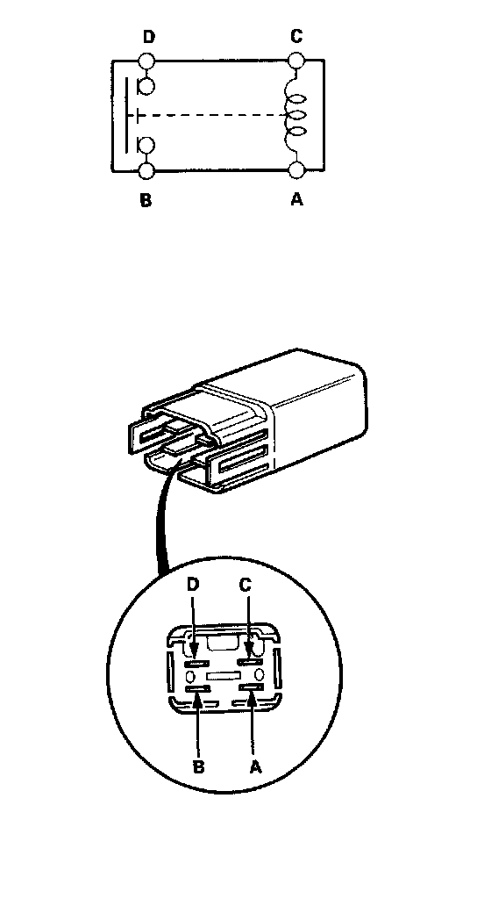

Gear Lockout Relay: Testing and Inspection

1. Remove the reverse lockout relay from the underhood relay box C.
2. There should be continuity between the C and A terminals.
3. There should be continuity between the D and B terminals when power and ground are connected to the C and A terminals. There should be no continuity when power is disconnected.